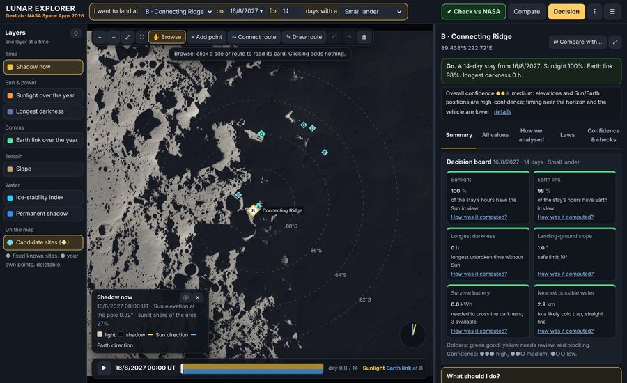
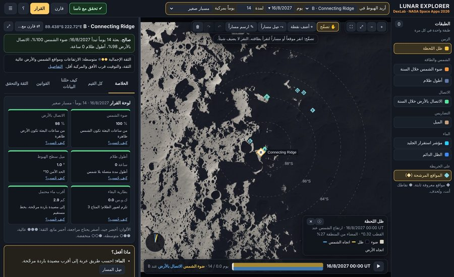

LUNAR EXPLORER
Where, and when, to land at the Moon’s south pole.أين ومتى نهبط عند القطب الجنوبي للقمر.
An interactive planner built on NASA data. For any point and any date it computes the real terrain horizon, tracks the Sun and Earth hour by hour, turns them into a clear decision, and checks itself live against NASA’s published maps.أداة تخطيط تفاعلية مبنية على بيانات ناسا. لأي نقطة وأي تاريخ تحسب الأفق الحقيقي من التضاريس، وترصد الشمس والأرض ساعة بساعة، وتحوّل ذلك إلى قرار واضح، وتختبر نفسها حياً مقابل خرائط ناسا المنشورة.


1 · Open the tool1 · افتح الأداة
Pick a site and a date, read the decision board, ask for a better date, plan a rover route, run the live check against NASA.اختر موقعاً وتاريخاً، واقرأ لوحة القرار، واطلب تاريخاً أفضل، وخطّط طريق العربة، وشغّل التحقق الحي مقابل ناسا.
Desktop or phone · works offline · about 17 MB, a few seconds to loadحاسوب أو هاتف · تعمل بلا إنترنت · نحو 17 ميغابايت، تحتاج بضع ثوانٍ لتفتح
2 · Watch the video2 · شاهد الفيديو
The problem, the tool in action, the NASA data and the impact.المشكلة، والأداة أثناء العمل، وبيانات ناسا، والأثر.
3 · Resources3 · الموارد
Everything behind the tool, in one place.كل ما وراء الأداة، في مكان واحد.
- 📄 Slides and user guide (PDF)الشرائح ودليل الاستخدام (PDF)
- 🛰 NASA data we usedبيانات ناسا المستخدمة
- ∑ How it worksكيف تعمل
- ✔ Validation against NASAالتحقق مقابل ناسا
- ◎ Impact · limits · next stepsالأثر · الحدود · الخطوات التالية
- 👥 Team · source codeالفريق · الكود المصدري
- ⓘ Use of AI · Referencesاستخدام الذكاء الاصطناعي · المراجع